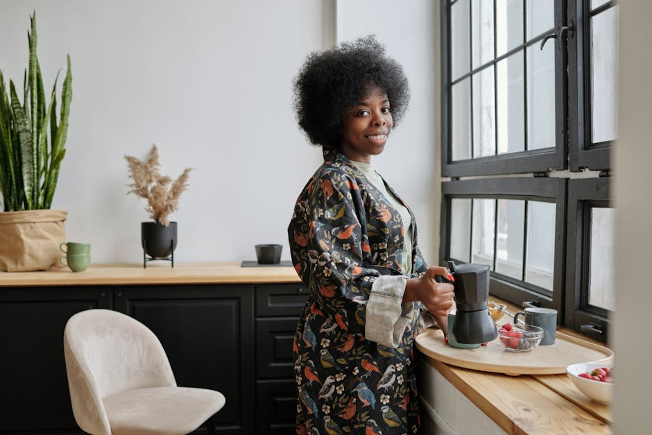
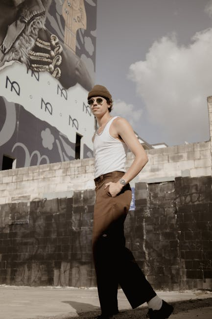
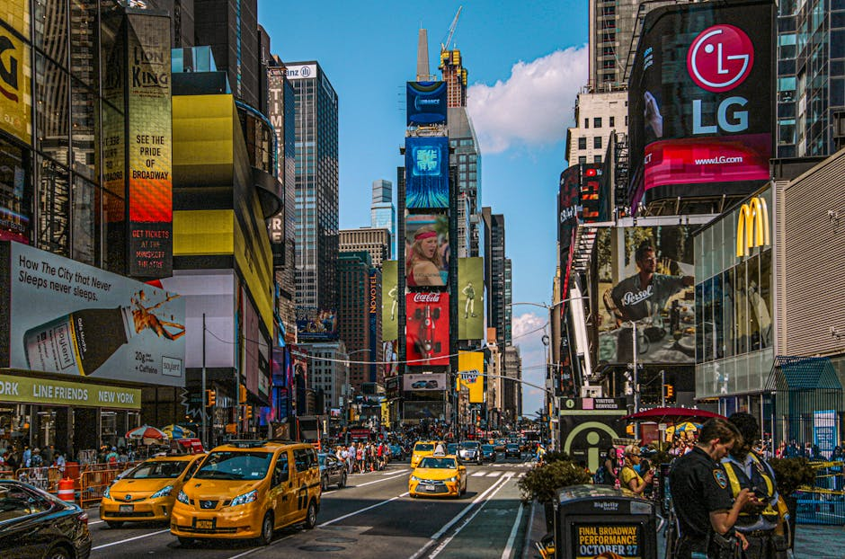
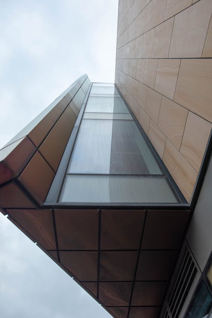
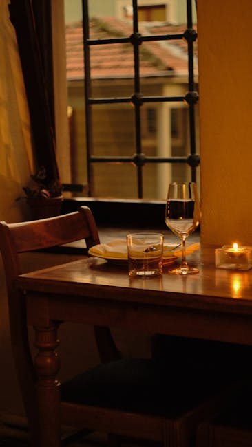
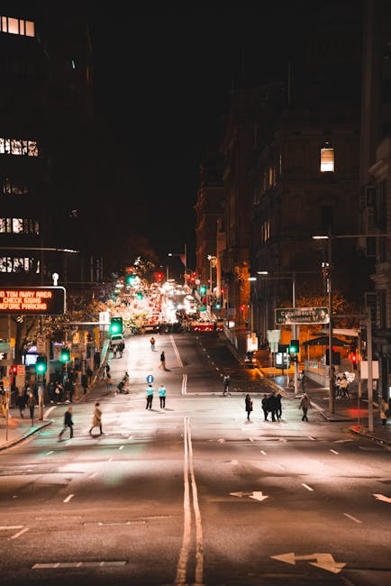
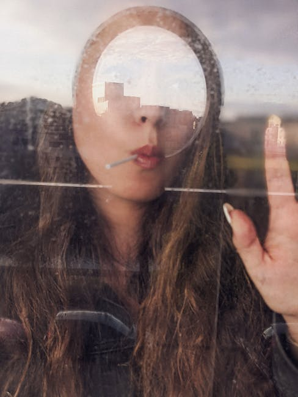
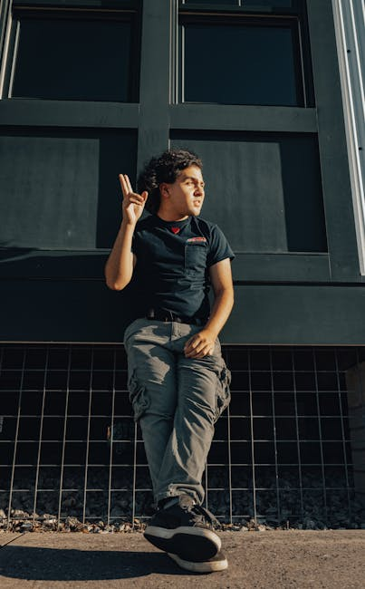
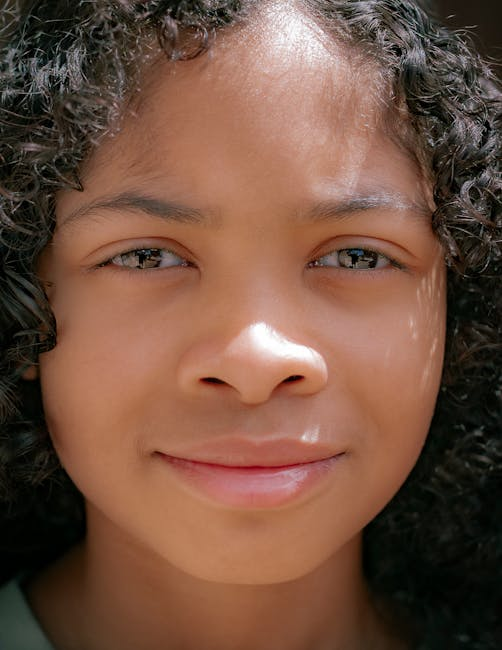
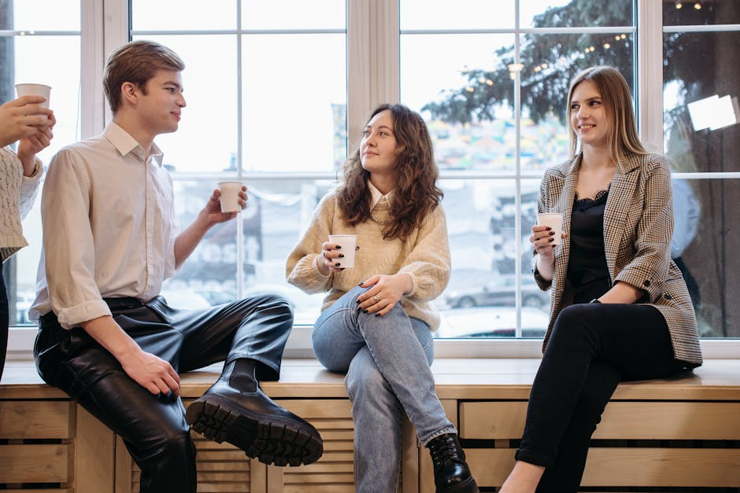

Generated Images
Theme: Your "normal" day is someone's dream, so be thankful.

Prompt 1:
A young woman, Emily, sits at her kitchen table with a steaming mug of coffee in front of her. Through the window behind her, city life is in full swing, with cars, people and buildings bustling about below. The light from the window casts a warm, natural light on Emily and her surroundings. The overall mood of the image is peaceful, cozy, and inviting.

Prompt 2:
A young woman, Emily, walks down a busy city street, surrounded by people going about their day. She wears comfortable clothes and carries a coffee cup, her face expressionless as she blends into the crowd. Capture the bustling atmosphere and the contrast between the vibrant city life and Emily's neutral expression. Use a realistic art style with a slightly desaturated color palette.

Prompt 3:
Anya gazes out of a hospital window at the bustling street below, dreaming: Emily, vibrant with life, walks through a vibrant crowd, immersed in a world of endless possibilities.

Prompt 4:
A young woman, Anya, sits on a hospital bed, looking longingly out the window. Outside, her friend Emily walks down a busy street, surrounded by people and shops. The sunlight casts long shadows, and the colors are vibrant and saturated. The scene is painted in a realistic style, with a focus on the contrast between the bustling city life and Anya's isolation in the hospital.

Prompt 5:
A cozy restaurant imbued with soft, warm lighting. Two friends, Emily and Anya, sit at a small, round table, laughing and enjoying each other's company. The restaurant is decorated with warm colors and soft textures, creating a comfortable and inviting ambiance. The pair clink their glasses in a cheerful toast, the warm candlelight reflecting in their eyes.

Prompt 6:
City street scene. Emily and Anya are walking and talking, people and traffic pass by in the background. The lighting is bright and cheerful, with a warm sunlight glow. Emily is smiling and gesturing towards the street. Anya is looking at her friend, her expression thoughtful. The mood is positive and lighthearted.

Prompt 7:
Anya sits in a cozy restaurant overlooking the bustling streets below. The vibrant lights and movement of the city create a backdrop of energy and life. Across from her, Emily listens intently, her eyes wide with newfound perspective.

Prompt 8:
A woman named Anya sits in a hospital bed, looking out the window at another woman named Emily walking down the bustling street below. Emily is smiling and carrying a bag of groceries. The scene is painted in a realistic style, with soft lighting and muted colors. The focus is on the contrast between Anya's confinement and Emily's freedom.

Prompt 9:
A young girl in a hospital gown looks longingly out the window at an adult woman walking down a busy city street. The woman is cheerful and vibrant, wearing casual clothes and carrying a coffee cup. The hospital room is sterile and white, with medical equipment in the background. The girl's expression is one of longing and sadness.

Prompt 10:
A realistic painting of a woman standing on a bustling street, her face turned towards the sun. Her eyes are closed and a gentle smile plays on her lips. The sunlight casts a warm glow on her face and the colors of the city around her are vibrant and full of life.

Prompt 11:
A young woman, Anya, sits in a cozy restaurant, smiling thoughtfully, a steaming cup of coffee in front of her. Sunlight streams through the window, casting a warm glow on her face.